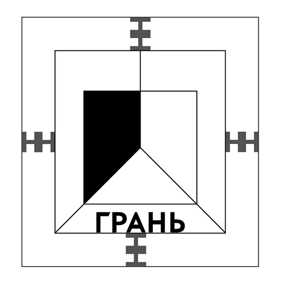
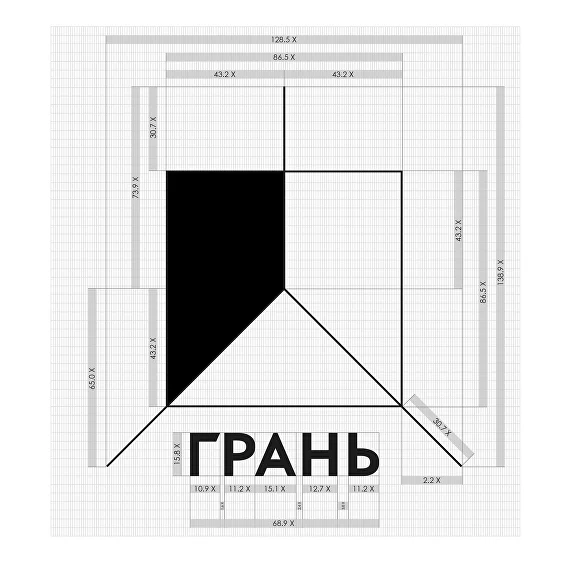

Редизайн логотипа
Логотип мастерской до редизайна был перегружен, было слишком много линий и пунктира. Новый логотип спроектирован в стиле минимализм, что облегчает картинку. На новом логотипе изображены три грани, которые образуют угол многогранника. Шрифт выбран более твердый, острый и устойчивый. Дизайн получился легкий, простой, но и одновременно запоминающийся.
 Основой концепции проекта послужила геометрия. Мастерская "Грань" занимается флорариумами, светильниками и декором из стекла. Флорариум - это специальная закрытая ёмкость, изготовленная из стекла, предназначенная для содержания и разведения растений и суккулентов. Логотип "до" был выполнен в стилизованном виде флорариума, геометрическая форма экосаэдр. В новом логотипе взяты только грани от этой формы, заключенные в квадрат.